Chapter 4: Design A Rate Limiter
Complete Interview-Ready Deep Dive
Chapter Mission
In a network system, a rate limiter is used to control the rate of traffic sent by a client or a service. In the HTTP world, a rate limiter limits the number of client requests allowed to be sent over a specified period. If the API request count exceeds the threshold defined by the rate limiter, all the excess calls are blocked.
Interview Value: Rate limiting is one of the most commonly asked system design questions. It tests your understanding of distributed systems, algorithms, and real-world trade-offs. Mastering this chapter gives you a complete toolkit for this topic.
Table of Contents
Introduction — What & Why Step 1: Requirements & Scope Where to Put the Rate Limiter Rate Limiting Algorithms (5 algorithms) High-Level Architecture Rate Limiting Rules Exceeding the Rate Limit Detailed Design Distributed Environment Challenges Performance & Monitoring Wrap Up & Summary1 Introduction
What Is a Rate Limiter?
Here are a few examples of rate limiting:
- A user can write no more than 2 posts per second
- You can create a maximum of 10 accounts per day from the same IP
- You can claim rewards no more than 5 times per week from the same device
Benefits of Rate Limiting
Prevent DoS Attacks
Almost all APIs published by large tech companies enforce some form of rate limiting. For example, Twitter limits the number of tweets to 300 per 3 hours. Google docs APIs have a default limit of 300 per user per 60 seconds for read requests.
Reduce Cost
Limiting excess requests means fewer servers and less allocation of resources. Rate limiting is extremely important for companies that use paid third party APIs. For example, you are charged per call for check credit, make a payment, retrieve health records, etc.
Prevent Server Overload
To reduce server load, a rate limiter is used to filter out excess requests caused by bots or users’ misbehavior.
2 Step 1: Requirements & Scope
Interview Dialogue Example
| Candidate | Interviewer |
|---|---|
| What kind of rate limiter? Client-side or server-side? | Server-side API rate limiter. |
| Based on IP, user ID, or other properties? | It should be flexible enough to support different sets of throttle rules. |
| Scale of the system? | It must be able to handle a large number of requests. |
| Will it work in a distributed environment? | Yes. |
| Separate service or in application code? | It is a design decision up to you. |
| Do we need to inform throttled users? | Yes. |
Requirements Summary
- Accurately limit excessive requests
- Low latency — The rate limiter should not slow down HTTP response time
- Use as little memory as possible
- Distributed rate limiting — Can be shared across multiple servers or processes
- Exception handling — Show clear exceptions to users when their requests are throttled
- High fault tolerance — If there are any problems with the rate limiter (e.g., cache server goes offline), it does not affect the entire system
3 Where to Put the Rate Limiter
Three Options
The right answer here is not “always server-side” or “always gateway.” The real question is: where can I reject excess traffic early, consistently, and with enough control over the rules?
Option 1: Client-Side Rate Limiter
The client keeps its own counter or token bucket and slows itself down before sending requests.
This works only when the client is trustworthy and under your control. It is weak for public APIs because malicious clients can bypass it, modify it, or ignore it entirely.
Option 2: Server-Side Rate Limiter
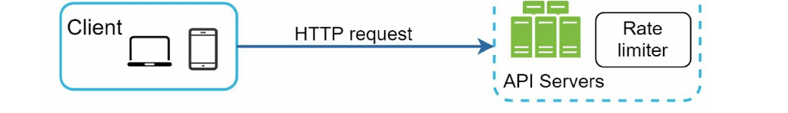
Here the limiter lives inside or directly beside the API server. The request reaches the server first, then the server checks quota, then either processes or rejects it.
This works because the server is authoritative. The downside is that each API server now owns part of the rate-limiting logic, so coordination can become harder in a distributed system.
Option 3: Rate Limiter Middleware
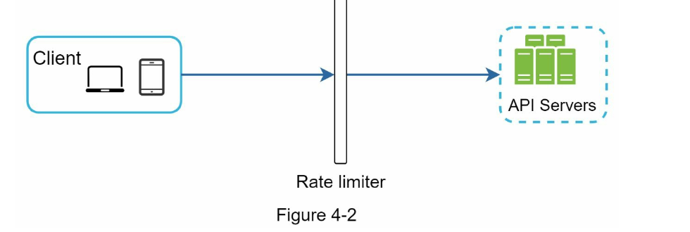
The request hits the middleware first. The middleware checks the rule and current usage, and only forwards allowed traffic to the API servers.
This works well because it rejects bad traffic before application code runs. It also centralizes rate-limiting behavior instead of duplicating it across every service.
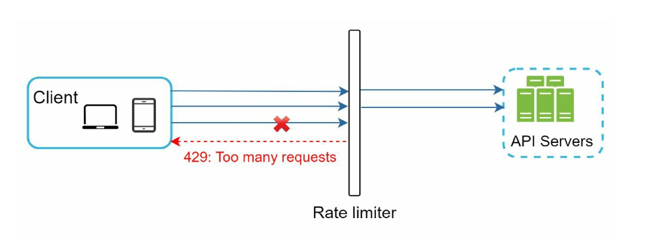
- Assume the rule is
2 requests per second. - The client sends 3 requests within the same second.
- The middleware allows the first two because quota still exists.
- The third is blocked and a
429 Too Many Requestsresponse is returned. - The benefit is operational: the API servers never spend CPU, DB, or downstream capacity on the rejected request.
API Gateway
Before talking about API gateways, the key point from the book is this: there is no absolute answer. The placement depends on your current technology stack, business rules, engineering capacity, and whether you need full control over the algorithm.
An API gateway is just the practical version of option 3. Instead of embedding the limiter inside every API service, you put it in a shared front door that can also handle authentication, SSL termination, IP whitelisting, and routing.
- Evaluate your current stack first. If your language, cache, and service design already support this well, server-side can be fine.
- If you need full control over the rate-limiting algorithm, implementing it yourself gives you that control.
- If you already have a microservice architecture with an API gateway, putting throttling there is often the cleanest design.
- If engineering bandwidth is limited, a commercial or managed gateway may be better than building a custom limiter from scratch.
4 Rate Limiting Algorithms
Rate limiting can be implemented using different algorithms, and each of them has distinct pros and cons. Even though this chapter does not focus on algorithms, understanding them at a high level helps to choose the right algorithm or combination of algorithms to fit our use cases.
Token Bucket Algorithm
The token bucket is the default interview answer when you want burst tolerance but still need a hard cap over time. The bucket stores permits, not requests.
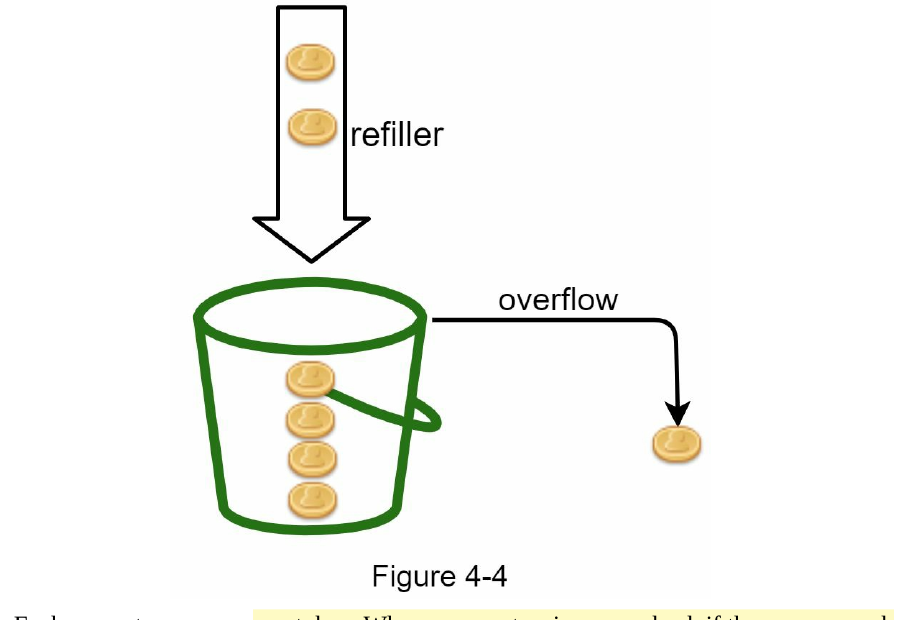
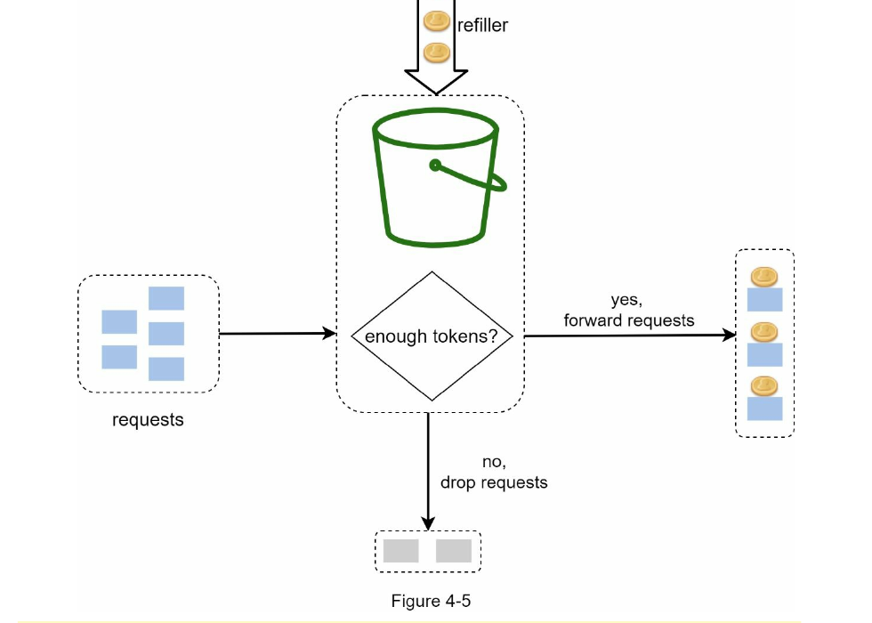
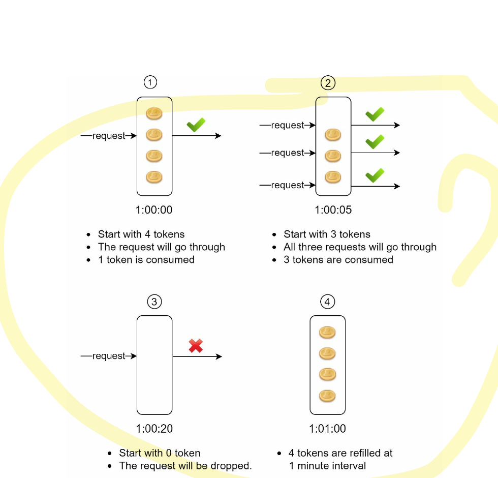
Interview-ready mental model
- Think of the bucket as a wallet of request credits.
- A refill job adds credits at a fixed rate until the bucket is full.
- Each request spends one credit.
- If the wallet is empty, the request is rejected.
Two parameters:
Bucket Size
The maximum number of tokens allowed in the bucket. This defines the burst you can absorb.
Refill Rate
The number of tokens added to the bucket per second. This defines the long-term throughput.
The answer depends on the rules you want to enforce.
- Different API endpoints often need different buckets. If posting, friending, and liking have different quotas, each rule needs its own bucket.
- If the rule is based on identity, such as an IP address, then the bucket key should be that IP.
- If the requirement is a global cap, a shared bucket is enough.
Pros
- Easy to implement
- Memory efficient
- Supports short bursts without violating the long-term rate
Cons
- Tuning bucket size and refill rate can be tricky
Leaking Bucket Algorithm
The leaking bucket algorithm is similar to the token bucket except that requests are processed at a fixed rate. It is usually implemented with a FIFO queue.
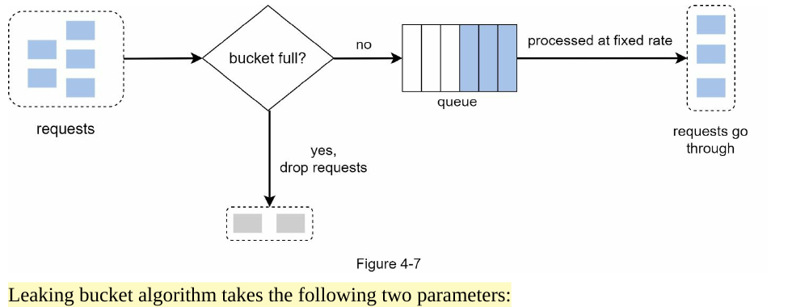
How it works:
- When a request arrives, the system checks if the queue is full. If it is not full, the request is added to the queue.
- Otherwise, the request is dropped.
- Requests are pulled from the queue and processed at regular intervals.
Requests
fixed rate
Two Parameters:
Bucket Size (Queue Size)
Equal to the queue size. The queue holds the requests to be processed at a fixed rate.
Outflow Rate
It defines how many requests can be processed at a fixed rate, usually in seconds.
Pros
- Memory efficient given the limited queue size
- Requests are processed at a fixed rate, therefore it is suitable for use cases that a stable outflow rate is needed
Cons
- A burst of traffic fills up the queue with old requests, and if they are not processed in time, recent requests will be rate limited
- Two parameters — might not be easy to tune properly
Fixed Window Counter Algorithm
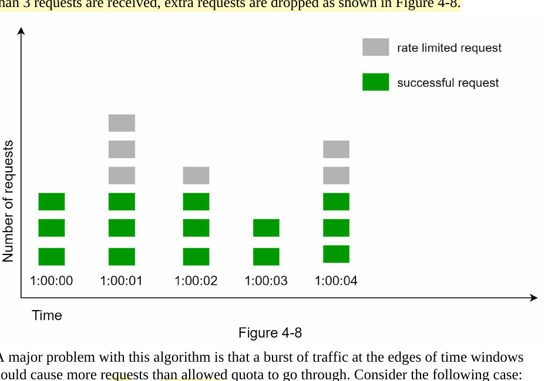
How it works:
- The algorithm divides the timeline into fix-sized time windows and assign a counter for each window.
- Each request increments the counter by one.
- Once the counter reaches the pre-defined threshold, new requests are dropped until a new time window starts.
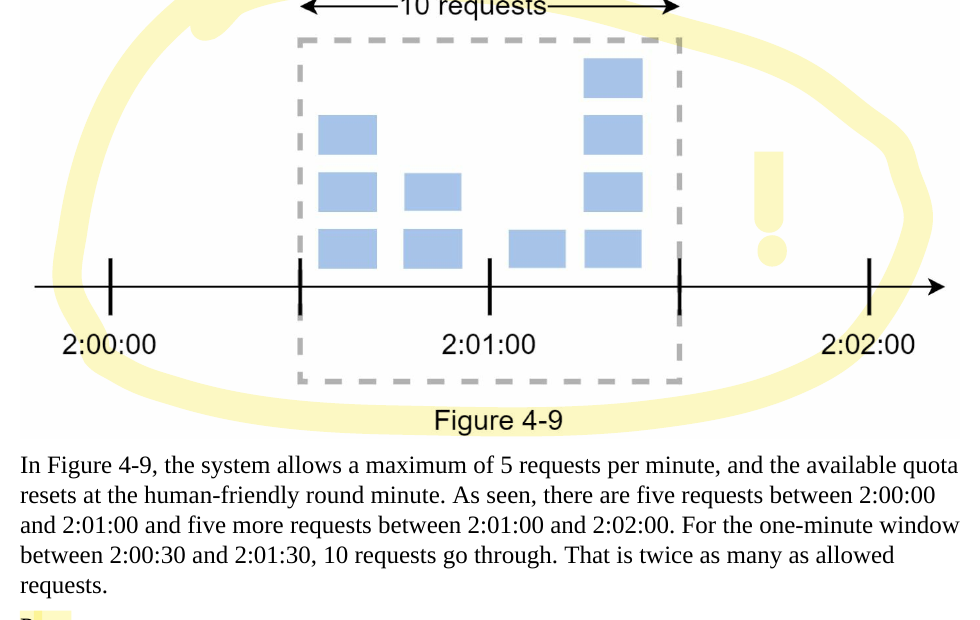
The Problem
10 requests pass in a ~2 second window (2:59 to 3:01), even though the limit is 5 per minute! Each window individually has 5 requests (valid), but the boundary burst allows double the expected rate.
Pros
- Memory efficient
- Easy to understand
- Resetting available quota at the end of a unit time window fits certain use cases
Cons
- Spike in traffic at the edges of a window could cause more requests than the allowed quota to go through
Sliding Window Log Algorithm
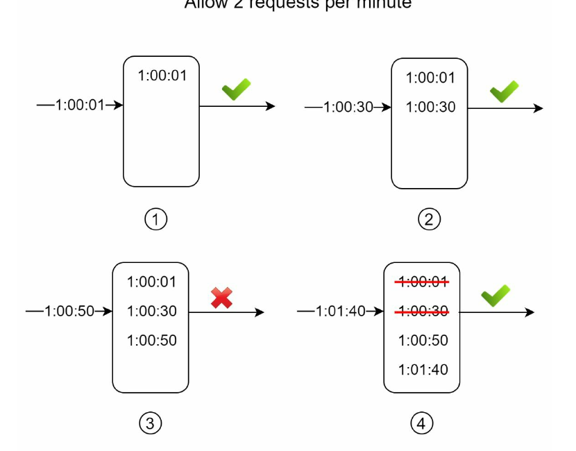
The sliding window log algorithm fixes the fixed window counter’s edge case issue.
How it works:
- The algorithm keeps track of request timestamps. Timestamp data is usually kept in cache, such as sorted sets of Redis.
- When a new request comes in, remove all the outdated timestamps. Outdated timestamps are defined as those older than the start of the current time window.
- Add timestamp of the new request to the log.
- If the log size is the same or lower than the allowed count, a request is accepted. Otherwise, it is rejected.
| Time | Action | Log Contents | Count | Result |
|---|---|---|---|---|
| 1:00:01 | Request arrives | [1:00:01] |
1 | ✓ Accept |
| 1:00:30 | Request arrives | [1:00:01, 1:00:30] |
2 | ✓ Accept |
| 1:00:50 | Request arrives | [1:00:01, 1:00:30, 1:00:50] |
3 | ✗ Reject (3 > 2) |
| 1:01:40 | Request arrives; remove outdated (before 1:00:40) | [1:00:50, 1:01:40] |
2 | ✓ Accept |
Pros
- Rate limiting implemented by this algorithm is very accurate. In any rolling window, requests will not exceed the rate limit.
Cons
- The algorithm consumes a lot of memory because even if a request is rejected, its timestamp might still be stored in memory.
Sliding Window Counter Algorithm
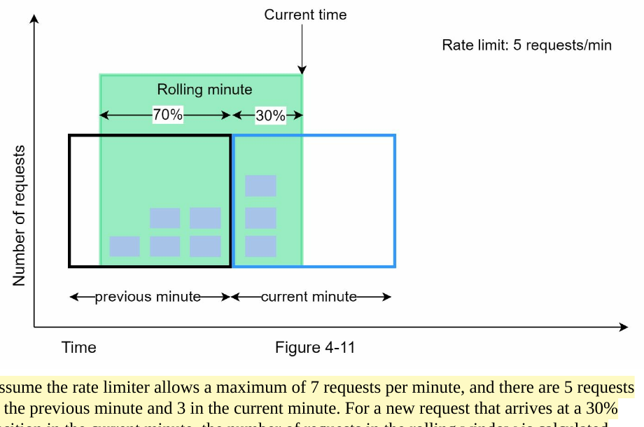
The sliding window counter algorithm is a hybrid approach that combines the fixed window counter and sliding window log.
Since 3.6 < 7 (the limit), the request is accepted. The formula weights the previous window’s count by the overlap percentage.
Pros
- It smooths out spikes in traffic because the rate is based on the average rate of the previous window
- Memory efficient
Cons
- It only works for not-so-strict look back window. It is an approximation of the actual rate because it assumes requests in the previous window are evenly distributed. However, this may not be true.
- According to experiments done by Cloudflare, only 0.003% of requests are wrongly allowed or rate limited among 400 million requests.
5 High-Level Architecture
Why Redis?
The basic idea of rate limiting algorithms is simple: at the high level, we need a counter to keep track of how many requests are sent from the same user, IP address, etc. If the counter is larger than the limit, the request is disallowed.
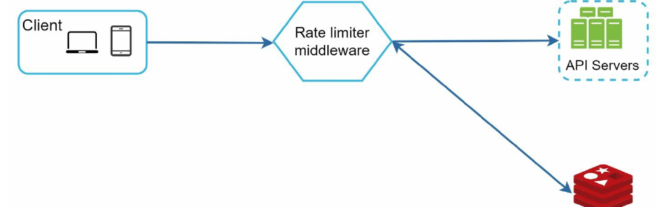
INCR (increase the stored counter by 1) and EXPIRE (set a timeout for the counter).
What Figure 4-12 Is Showing
- Client -> middleware. Every request hits the rate limiter before it hits the business API.
- Middleware -> Redis. The middleware reads the current counter or timestamp data from Redis because Redis is fast and supports expiration.
- Decision point. The middleware compares the current usage with the rule for that user, IP, token, endpoint, or action.
- If allowed, the request is forwarded to the API servers and the limiter updates the Redis state.
- If blocked, the request never reaches the API server. The limiter returns a throttling response immediately.
This is the key interview point: the rate limiter is usually placed in front of the API handler, and Redis stores the shared rate-limiting state. That keeps the application servers from doing useless work on requests that should be rejected early.
6 Rate Limiting Rules
Lyft’s Rate Limiting Configuration
Lyft open-sourced their rate-limiting component. The important design detail is that rules are not hardcoded into the request path; they are usually written in configuration files and saved on disk, then loaded into memory by workers.
That matters because the limiter must answer two separate questions for every request: what quota applies and which bucket this request belongs to. The domain and descriptors fields define that mapping.
How to read this: in the messaging domain, requests with descriptor message_type=marketing share one quota bucket. That bucket allows 5 requests per day.
How to read this: in the auth domain, requests with descriptor auth_type=login share one quota bucket. That bucket allows 5 login requests per minute.
Why Rules Live on Disk but Are Served from Cache
- Disk or config store is the source of truth. It is easy to review, version, and update.
- Workers periodically pull those rules and refresh an in-memory cache.
- The request path reads from cache, not from disk. That keeps every request fast.
- The limiter then combines rule + request attributes to decide which Redis key to read and update.
If an interviewer pushes deeper, say the effective Redis key usually looks conceptually like: {domain}:{descriptor_key}:{descriptor_value}:{client_id}. The exact key format varies, but the point is the same: each rule maps traffic into a specific counter bucket.
7 Exceeding the Rate Limit
HTTP 429 — Too Many Requests
In case a request is rate limited, APIs return a HTTP 429 (too many requests) error response to the client. Depending on the use cases, we may enqueue the rate-limited requests to be processed later.
The main idea is simple: the limiter rejects the request before the backend does more work. That protects the system from overload and gives the client a clear contract about when to retry.
Drop vs Queue
- Drop the request when the action is disposable or retryable, such as a burst of polling calls or repeated login attempts.
- Queue the request when the action still matters and can be processed later, such as order creation, asynchronous notifications, or batch work.
- Return 429 either way. From the client’s point of view, the request was not processed right now.
A good interview sentence is: rate limiting is not only about blocking traffic; it is also about deciding what to do with overflow traffic. For some flows you discard it. For others you buffer it.
Rate Limiter Response Headers
The rate limiter returns the following HTTP headers so the client can understand both the current quota and the retry policy:
| Header | Description |
|---|---|
X-Ratelimit-Remaining |
The remaining number of allowed requests within the window |
X-Ratelimit-Limit |
How many calls the client can make per time window |
X-Ratelimit-Retry-After |
The number of seconds to wait until you can make a request again without being throttled |
X-Ratelimit-Retry-After header are returned to the client.
How a Client Uses These Headers
X-Ratelimit-Limittells the client the size of the quota, for example100 requests per minute.X-Ratelimit-Remainingtells the client how much budget is left in the current window or bucket.X-Ratelimit-Retry-Aftertells the client how long to wait before sending another request after being throttled.
This is why good clients implement backoff and retry instead of hammering the API again immediately. If the interviewer asks what a well-behaved client does, say: read the headers, slow down, retry later, and avoid repeated useless calls.
8 Detailed Design
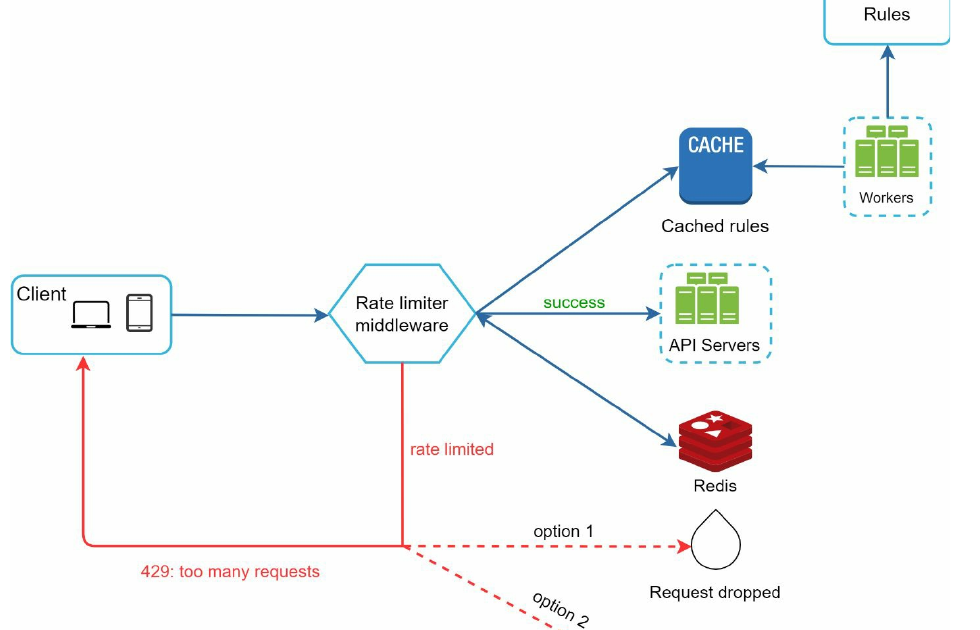
Design Walkthrough
- Rules are stored on disk. This is the configuration source of truth.
- Workers load rules into cache. The request path does not read config files directly because that would be slow and operationally messy.
- The client sends a request. The request hits the rate limiter middleware first, before the API handler runs.
- The middleware reads the matching rule from cache. It determines what limit applies to this request.
- The middleware reads the current usage state from Redis. Depending on the algorithm, that state may be a counter, a token count, or recent timestamps.
- The middleware makes the allow / reject decision. This is the critical control point.
Allowed path: the request goes to the API servers and the limiter updates Redis.
Rejected path: the limiter returns HTTP 429 immediately. Depending on the business requirement, the request is either dropped or forwarded to a queue for later processing.
What the figure is really teaching: rules and state are separated. Rules live in config and cache. State lives in Redis. The middleware joins those two pieces at request time to make the throttling decision.
9 Distributed Environment Challenges
Race Condition
The basic fixed-counter flow looks safe at first glance: read the counter, check the threshold, then increment it. The problem is that those three steps are not automatically one atomic operation.
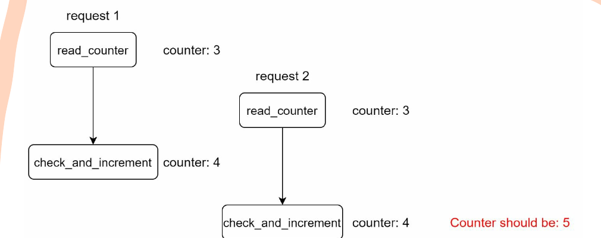
- Assume the counter in Redis is currently 3.
- Request 1 reads the counter and sees 3.
- Request 2 reads the counter before Request 1 writes anything back, so it also sees 3.
- Both requests independently decide that the next valid value is 4.
- Both write back 4.
- The correct result should have been 5, but one increment is effectively lost.
That is the race condition: multiple concurrent requests make decisions using stale shared state. In an interview, say the issue is not just data corruption. It can cause the limiter to allow more traffic than intended or track usage inaccurately.
Practical Fixes
- Locks solve correctness but usually hurt throughput and latency.
- Atomic Redis operations or Lua scripts are better because the read-check-update logic runs as one unit.
- Redis sorted sets are also commonly used, especially for sliding-window style algorithms.
Synchronization Issue
Synchronization is a different problem from race condition. Here the issue is not two threads updating one counter at the same time. The issue is that different rate limiter instances may see different subsets of the traffic.
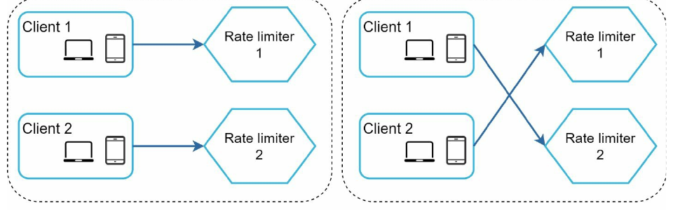
- In the left half of Figure 4-15, each client happens to stay on one limiter instance, so each limiter sees a clean local history.
- In the right half, the web tier is stateless, so the same client can hit different limiter instances on different requests.
- If limiter 1 and limiter 2 keep separate local counters, neither instance has the full picture.
- The result is incorrect enforcement: a client can exceed the intended global quota because its usage is split across multiple machines.
This is why local in-memory counters alone are not enough in a distributed deployment.
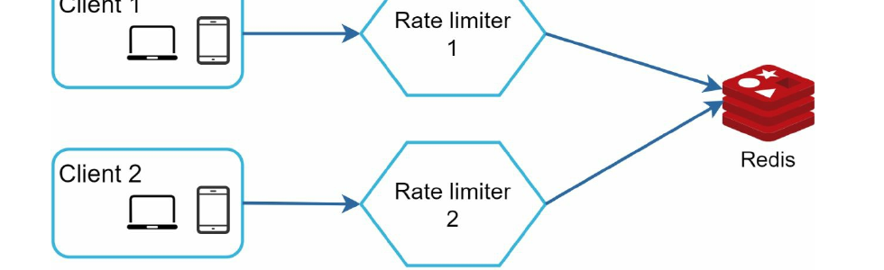
Figure 4-16 shows the fix: multiple rate limiter instances share a centralized data store such as Redis. Now every limiter reads and writes the same counters, so the quota is enforced consistently no matter which instance receives the request.
Why not sticky sessions? They can keep one client attached to one limiter, but that approach is usually rejected because it is less scalable, less flexible during failures, and harder to operate. Shared centralized state is the standard answer.
10 Performance Optimization & Monitoring
Performance Optimization
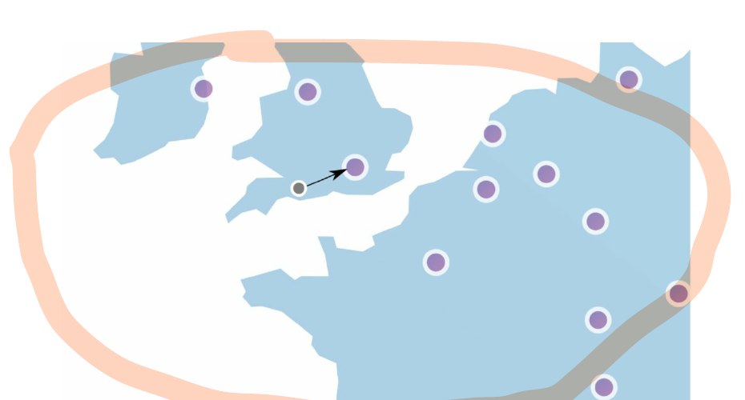
What Figure 4-17 is showing: users should be routed to the closest edge location instead of sending every request to one faraway region. That reduces network latency before the request even reaches the limiter.
Multi-Data Center Setup
If the limiter is geographically far from the user, the throttling check itself adds noticeable latency. Putting edge capacity closer to users reduces round-trip time.
Eventual Consistency
In global systems, perfect real-time synchronization across all regions is expensive. Many rate limiters accept small short-lived drift and use eventual consistency instead.
Monitoring
After the rate limiter is put in place, it is important to gather analytics data to check whether the rate limiter is effective. Primarily, we want to make sure:
- The rate limiting algorithm is effective.
- The rate limiting rules are effective.
The monitoring answer in an interview should be practical: track 429 rate, allowed rate, false-positive throttling, queue buildup, Redis latency, and hot keys. Otherwise you will not know whether the limiter is protecting the system or hurting real users.
11 Wrap Up
Algorithm Comparison
| Algorithm | Memory | Burst? | Accuracy | Best For |
|---|---|---|---|---|
| Token Bucket | Low | Yes | Good | API throttling (Amazon, Stripe) |
| Leaking Bucket | Low | No | Good | Stable outflow needed |
| Fixed Window | Low | Edge burst | Low | Simple use cases |
| Sliding Window Log | High | No | Very High | Strict rate limiting |
| Sliding Window Counter | Low | Smoothed | High | Best balance (Cloudflare) |
Additional Talking Points
Hard vs Soft Rate Limiting
- Hard: The number of requests cannot exceed the threshold.
- Soft: Requests can exceed the threshold for a short period.
Rate Limiting at Different Levels
We focused on application level (HTTP: Layer 7) in this chapter. It is possible to apply rate limiting at other layers as well. For example, you can apply rate limiting by IP addresses using Iptables (Layer 3 — Network layer).
Note: The OSI model has 7 layers: Layer 1 (Physical), Layer 2 (Data Link), Layer 3 (Network), Layer 4 (Transport), Layer 5 (Session), Layer 6 (Presentation), Layer 7 (Application).
Avoid Being Rate Limited (Client Best Practices)
- Use client cache to avoid making frequent API calls
- Understand the limit and do not send too many requests in a short time frame
- Include code to catch exceptions or errors so your client can gracefully recover
- Add sufficient back off time to retry logic
Key Takeaways
- Rate limiting controls the rate of traffic to prevent DoS attacks, reduce costs, and prevent server overload.
- 5 algorithms: Token Bucket, Leaking Bucket, Fixed Window Counter, Sliding Window Log, Sliding Window Counter — each with distinct trade-offs.
- Redis is the go-to for storing counters due to its speed and built-in INCR/EXPIRE commands.
- Distributed challenges: Race conditions (solve with Lua scripts) and synchronization (solve with centralized Redis).
- Monitoring is crucial — check if rules are too strict or algorithms need adjustment for burst traffic.